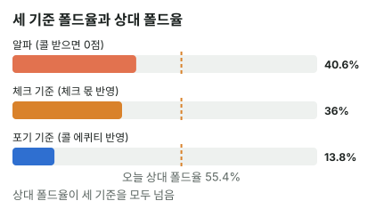

안녕하세요. A09에서 플랍 c-bet이 본전이 되는 폴드율을 구했고, I18에서 올인이 "접게 해서 한 번, 끝까지 가서 한 번" 이긴다고 배웠죠.
오늘은 둘을 합쳐 턴에서 한 번 더 거는 것(더블배럴)을 판단해요. 드로우로 거는 벳은 콜을 받아도 끝이 아니라서, 알파 하나로는 답이 안 나와요. 그리고 하나 더, 체크해도 리버를 공짜로 본다는 점까지 넣어야 진짜 비교가 돼요.
이 글에서 배울 것
- 알파에서 시작해 콜 받을 때 에퀴티로 내리고, 체크 몫으로 다시 올려 진짜 본전 폴드율을 찾는 법
- 본전 폴드율 공식이 왜 그렇게 생겼는지: "접을 때 몫 + 콜 받을 때 몫 = 비교 대상"이 되는 점
- 블러프를 0BB가 아니라 체크했을 때 몫과 비교해야 하는 이유
오늘의 핸드
Hero (BTN 자리 · 스택 100BB) · 상대 (BB)

프리플랍
Hero(BTN) 2.5BB 오픈 → SB 폴드 → 상대(BB) 콜
플랍 · 팟 5.5BB


상대 체크 → Hero 2BB c-bet → 상대 콜. 팟 5.5 + 2 + 2 = 9.5BB
턴 · 팟 9.5BB


4♥가 와서 Hero는 양방 스트레이트 드로우(4-5-6-7에 3이나 8이 오면 스트레이트)가 됐어요. 아직 페어는 없어요. 상대 체크 → Hero는 6.5BB를 걸까, 체크할까?
결론부터 말할게요. 오늘 가정한 상대라면 6.5BB 배럴이 체크보다 낫습니다. 상대 폴드율(약 55.4%)이 체크 기준 본전 폴드율(약 36%)보다 높아요.
남은 베팅이 있어 실제 결과는 달라질 수 있어요. 그래서 오늘은 금액(EV) 대신 상대 폴드율 vs 본전 폴드율로만 판정해요. 아래 BB 금액은 기준을 구하기 위한 계산용이에요(최종 손익 아님).
오늘의 가정 세 가지
계산 전에 가정을 먼저 밝혀 둘게요.
- 상대 레인지: 플랍 c-bet에 콜한 BB 핸드를 아래 표처럼 가정해요. AA·KK·AK·KQo처럼 프리플랍에 3벳했을 핸드는 뺐어요(솔버 결과 아님)
- 상대 대응: 턴 벳에 콜 아니면 폴드만 해요(체크레이즈 없음)
- 리버: 콜을 받거나 Hero가 체크하면, 리버는 양쪽 다 체크로 쇼다운한다고 단순화해요
1단계. 순수 블러프라면 (알파)
알파 = 콜 받으면 늘 진다고 칠 때, 상대가 접어야 하는 최소 비율이에요(A01).
알파 = 6.5(벳) ÷ (9.5(지금 팟) + 6.5) = 약 40.6%
알파는 "폴드율 × 9.5(얻는 팟) = (1 − 폴드율) × 6.5(잃는 벳)"이 되는 점이에요. 접을 때 버는 몫과 콜 받을 때 잃는 몫이 같아지는 폴드율이죠. 이 틀을 기억해 두면 다음 두 단계가 같은 모양으로 이어져요.
2단계. 상대 턴 레인지와 폴드율 (가정)
| 상대 대응 | 핸드 | 콤보 |
|---|---|---|
| 콜 | K2s-KQs, K9o-KJo, A7s, A7o, A4s, A2s, A4o, A2o, 97s, 87s, 76s, 75s, 54s, 53s, 64s, 99, 88, 77, 44, 22 | 131 |
| 폴드 | 33, 55, 66, A3s, A5s, A6s, A8s, A9s, A3o, A5o, A6o, A8o-ATo, QTs, JTs, T9s, 98s, 86s, Q9o, J9o, T9o, 98o | 163 |
표를 읽는 법
- 콜: K 페어, A7·A4·A2처럼 보드와 짝이 맞은 페어, 7이나 4가 맞은 수딧 커넥터·한 칸 띈 수딧, 99·88 같은 포켓페어, 셋(77·44·22)과 투페어, 그리고 4♥로 양방 드로우가 된 53s
- 폴드: 7보다 낮은 작은 포켓페어(33·55·66), 아무것도 안 맞은 A·Q·J·T·9 하이, 그리고 4♥로 생긴 거트샷(한 장만 기다리는 드로우: A3s는 5, A5s는 3, 86s는 5)
💡 빨리 세는 팁: Hero의 6♥·5♥ 때문에 55·66은 콤보가 절반(6 → 3)
상대 폴드율 = 163 ÷ 294 = 약 55.4%
3단계. 콜 받을 때 에퀴티 넣기 (포기 기준)
콜 받아도 끝이 아니에요
Hero는 순수 블러프가 아니라 드로우예요. 콜을 받아도 리버에 3이나 8이 오면 이겨요. 여기서 팟 몫 = 쇼다운까지 가면 평균으로 가져가는 팟(에퀴티 × 팟)이에요. 콜 받으면 팟은 9.5 + 6.5 + 6.5 = 22.5BB, 콜 레인지 상대 Hero 에퀴티는 약 22.1%(리버 한 장을 전부 셈)예요.
- 콜 받을 때 팟 몫 = 0.22137 × 22.5 = 약 4.98BB
- 낸 6.5BB보다 약 1.52BB 모자라요. 이게 콜 받을 때 잃는 돈이에요
본전 폴드율 (포기와 비교)
알파와 같은 틀이에요. 다만 "잃는 벳 6.5BB" 자리에 "잃는 돈 1.52BB"가 들어가요. 폴드율 × 9.5 = (1 − 폴드율) × 1.52가 되는 점을 찾으면 이렇게 돼요.
포기 기준 본전 폴드율 = 1.51908(콜 받을 때 잃는 돈) ÷ (9.5(지금 팟) + 1.51908) = 약 13.8%
이건 "벳하지 않으면 이 팟을 그냥 내준다(0BB)"는 것과 비교한 기준이에요.
4단계. 체크와 비교하기 (체크 기준)
체크는 0BB가 아니에요
그런데 Hero가 체크해도 리버를 공짜로 봐요. 리버까지 체크로 간다고 보면, 상대 전체 레인지 상대 에퀴티 약 25.7%만큼 팟을 가져가요. 9.5BB 중 약 2.45BB예요.
"체크하면 콜 레인지 상대(22.1%)보다 더 많이 이긴다고요?" 하실 수 있어요. 전체 레인지에는 폴드 칸의 A·Q·J 하이·작은 포켓페어가 들어 있는데, 이 핸드들은 Hero가 5나 6만 맞아도 이기는 상대예요. 그래서 에퀴티가 올라가요. 배럴은 바로 이 핸드들을 접게 해서 그 몫을 포기하는 거예요.
그러니 배럴은 0BB가 아니라 이 체크 몫 2.45BB와 같아지는 점을 넘어야 해요. 접을 때 몫(폴드율 × 9.5)에서 콜 받을 때 몫((1 − 폴드율) × 1.52)을 뺀 값이 2.45가 되는 점이에요.
체크 기준 본전 폴드율 = (2.4455(체크 몫) + 1.51908(콜 받을 때 잃는 돈)) ÷ (9.5 + 1.51908) = 약 36%
세 기준 나란히
| 기준 | 본전 폴드율 |
|---|---|
| 알파(콜 받으면 늘 짐) | 약 40.6% |
| 체크 기준 | 약 36% |
| 포기 기준 | 약 13.8% |
| 오늘 상대 폴드율 | 약 55.4% |
순서가 이렇게 나오는 이유도 볼게요. 콜 받을 때 에퀴티는 기준을 내리고, 체크 몫은 기준을 올려요. 오늘 숫자에서는 내리는 힘이 더 커서 체크 기준이 알파 아래, 포기 기준 위에 왔어요. 진짜 비교 기준은 그 사이, 체크 기준이에요.

왜 그럴까: 배럴은 "공짜 리버"를 팔고 "폴드"를 사는 거예요
체크와 배럴의 차이
체크하면 Hero는 리버를 공짜로 보고, 맞으면 이기고 못 맞으면 져요. 배럴하면 그 공짜 리버를 포기하는 대신 상대가 접는 판을 사요.
그래서 배럴의 손익은 "폴드로 얻는 것"에서 "공짜 리버를 판 값"을 뺀 거예요. 공짜 리버의 값이 바로 체크 몫 2.45BB이고요.
드로우가 좋아지면 기준은 어느 쪽으로 움직일까
여기서 재미있는 점이 있어요. Hero 드로우가 좋을수록 체크 몫이 커지는데, 이건 체크 기준 본전 폴드율을 올리는 쪽이에요. 동시에 콜 받을 때 잃는 돈은 줄어서 기준을 내리는 쪽으로도 움직여요. 두 힘이 반대 방향이에요.
보통은 잃는 돈이 줄어드는 쪽이 더 크게 작용해 기준이 내려가요. 하지만 체크 몫이 커지는 만큼은 기준을 다시 올리니, 드로우가 좋다고 기준이 그만큼 많이 내려가지는 않아요. 그래서 늘 체크 몫과 같이 비교해야 해요.
두 번 이기는 길, 그리고 그 값
I18의 "두 번 이긴다"를 오늘 숫자로 보면 이래요. 상대가 접으면 9.5BB를 바로 가져오고(첫 번째 길), 콜 받아도 22.1%는 리버에 이겨요(두 번째 길). 오늘은 첫 번째 길이 55.4%로 열려 있어서, 공짜 리버를 판 값보다 크게 남는 거예요.
자주 하는 실수
실수 1. 알파만 보고 판단 "6.5BB면 알파 40.6%, 상대가 그만큼 접을까?"로 끝내는 경우예요. Hero는 콜을 받아도 22.1%는 이기는 드로우라, 실제 기준은 체크 기준 약 36%로 더 낮아요. 알파만 보면 배럴 가능한 장면을 놓칠 수 있어요. 대신 드로우라면 콜 받을 때 에퀴티를 꼭 넣어요.
실수 2. "드로우니까 거의 공짜 벳" 포기 기준 13.8%만 보고 "상대가 조금만 접어도 남는다"고 보는 경우예요. 하지만 Hero는 체크해도 2.45BB 몫을 가져가요. 그걸 버리고 거는 거라, 진짜 기준은 36%예요. 대신 비교 대상을 0BB가 아니라 체크 몫으로 잡아요.
실수 3. 6.5BB에서 구한 36%를 다른 벳 크기에도 그대로 씀 "체크 기준은 36%"라고 외워 두는 경우예요. 그런데 36%는 6.5BB 벳에서 콜 받을 때 잃는 돈이 1.52BB라서 나온 숫자예요. 벳 크기가 바뀌면 콜 받은 뒤 팟도, 잃는 돈도 바뀌어 기준이 새로 나와요. 대신 크기를 바꿀 때마다 잃는 돈부터 다시 구하고, 상대가 접는 핸드도 다시 세요.
"콜 받으면 리버에 블러프할 수도 있는데, 왜 리버를 체크로 쳐요?"
좋은 질문이에요. 오늘은 계산을 끝까지 보이려고 리버 베팅을 다 뺐어요. 그 단순화가 기준을 어느 쪽으로 기울이는지는 알아 둘 만해요.
- 콜 받은 뒤 리버: Hero가 못 맞았을 때 블러프로 상대를 접게 하거나, 맞았을 때 더 받아 낼 길이 있다면 배럴 쪽 몫이 오늘 계산보다 커져요
- 체크한 뒤 리버: 상대 리버 벳에 Hero가 접게 되면 체크 몫은 2.45BB보다 작아지고, 반대로 Hero가 리버에 블러프하거나 맞은 뒤 더 받아 내면 커질 수 있어요
이렇게 단순화는 양쪽 몫을 다 조금씩 흔들어요. 오늘처럼 상대 폴드율(55.4%)과 체크 기준(36%)이 넉넉히 떨어져 있으면 결론이 잘 안 바뀌지만, 경계에 가까운 장면이라면 리버 계획까지 같이 따져야 해요.
숫자가 뒤집히는 지점
기준은 상대 폴드율이 체크 기준 본전 폴드율보다 높은지예요.
- 상대가 더 넓게 콜하면 폴드율이 내려가고, 콜 레인지가 약해져 콜 받을 때 에퀴티는 올라가요. 두 변화가 기준과 폴드율을 동시에 움직여요
- 벳 크기가 바뀌면 콜 받을 때 잃는 돈이 바뀌어 기준도 다시 나와요
선생님의 한마디
턴에 드로우로 벳할지 고민될 때 우리는 이 순서로 해요.
- 상대가 플랍에 콜한 핸드를 떠올리고 턴 카드에 접을 핸드를 골라요(거트샷·작은 페어·하이 카드)
- 그 비율을 체크 기준과 비교해요
- 경계에 가까우면 리버 계획(맞았을 때 얼마나 더 받을지, 못 맞았을 때 리버 블러프를 할지)으로 정해요. 오늘 계산은 리버 베팅을 뺀 단순화예요
연습 문제 (같은 보드, 같은 Hero 핸드)
학습툴 에퀴티 계산기에는 레인지 입력이 없어서, 내 카드·보드와 상대 핸드 하나를 넣는 핸드 대 핸드로만 확인할 수 있어요. 알파는 홀덤학습 팟 오즈 퀴즈 Lv.5(블러프 본전)로 연습하고, 본전 폴드율은 위 공식으로 직접 계산해요.
문제 1. 이 상대는 작은 페어·A 하이·Q·J 하이까지 거의 다 콜해서, 접는 건 81콤보(294콤보 중)뿐이에요. 콜 레인지가 넓어져서 콜 레인지 상대 Hero 에퀴티는 약 24.9%예요. 배럴? 체크?
정답 보기
상대 폴드율 = 81 ÷ 294 = 약 27.6%. 콜 받을 때 팟 몫 = 0.24872 × 22.5 = 약 5.6BB, 잃는 돈 약 0.9BB. 체크 기준 본전 폴드율 = (2.4455 + 0.90381) ÷ (9.5 + 0.90381) = 약 32.2% > 27.6% → 체크가 나아요. 포기 기준 본전 폴드율은 약 8.7%라 그것만 보면 배럴이 이득처럼 보이지만, 체크와 비교하면 아니에요. 넓게 콜하는 상대에게는 공짜 리버를 파는 값이 폴드로 사는 것보다 커요.
문제 2. 처음 상대 그대로, 벳만 9.5BB(팟벳)로 키워요. 벳이 커져도 상대가 같은 핸드로 접는다고 가정할게요. 배럴? 체크?
정답 보기
콜 받으면 팟 28.5BB, 팟 몫 = 0.22137 × 28.5 = 약 6.31BB, 잃는 돈 약 3.19BB. 체크 기준 본전 폴드율 = (2.4455 + 3.19084) ÷ (9.5 + 3.19084) = 약 44.4% < 55.4% → 배럴. 벳이 커지면 기준 폴드율이 36%에서 44.4%로 올라가요. 실제로는 벳이 커지면 접는 핸드가 바뀔 수 있으니, 그때는 상대 폴드율도 다시 세야 해요.
핵심 정리
- 드로우 배럴의 기준은 알파(약 40.6%) → 포기 기준(약 13.8%) → 체크 기준(약 36%) 순서로 구해요. 진짜 비교는 가운데 있는 체크 기준이에요
- 본전 폴드율은 늘 같은 틀이에요: 접을 때 몫 + 콜 받을 때 몫 = 비교 대상(포기면 0, 체크면 체크 몫)이 되는 폴드율
- 배럴은 공짜 리버를 팔고 폴드를 사는 거예요. 드로우가 좋아지면 줄어든 손해는 기준을 내리지만, 커진 체크 몫이 그만큼 다시 올려요
- 벳 크기를 바꾸면 기준이 바뀌고, 상대가 접는 핸드도 다시 세야 해요
정리하며
오늘은 턴 4♥로 양방 드로우가 된 6♥5♥로 6.5BB를 더 걸지 따졌어요. 알파 40.6%에서 시작해, 콜 받아도 22.1%는 이긴다는 걸 넣어 포기 기준 13.8%로 내려왔고, 체크해도 2.45BB를 가져간다는 걸 넣어 체크 기준 36%로 다시 올라왔죠. 상대 폴드율 55.4%가 이보다 높아서 배럴이었어요.
턴에 드로우로 벳할지 고민되면, "체크하면 얼마를 가져가나"를 먼저 떠올리세요. 그게 배럴이 넘어야 할 진짜 선이에요.
다음 글 A22에서는 같은 드로우 벳을 올인으로 끝까지 가는 장면에서 봐요. 남은 베팅이 없으니 오늘처럼 폴드율만이 아니라, 세미블러프의 EV를 금액으로 정확히 계산할 수 있어요.
AI 작성 · 숫자는 계산 검증 (콤보는 하나씩 셈, 리버 한 장은 전부 셈) · 가정 레인지 기준 (솔버 결과 아님) · 상대는 콜·폴드만(레이즈 없음) · 콜 받으면·체크하면 리버까지 체크로 단순화 · 이번 한 번의 결정 기준